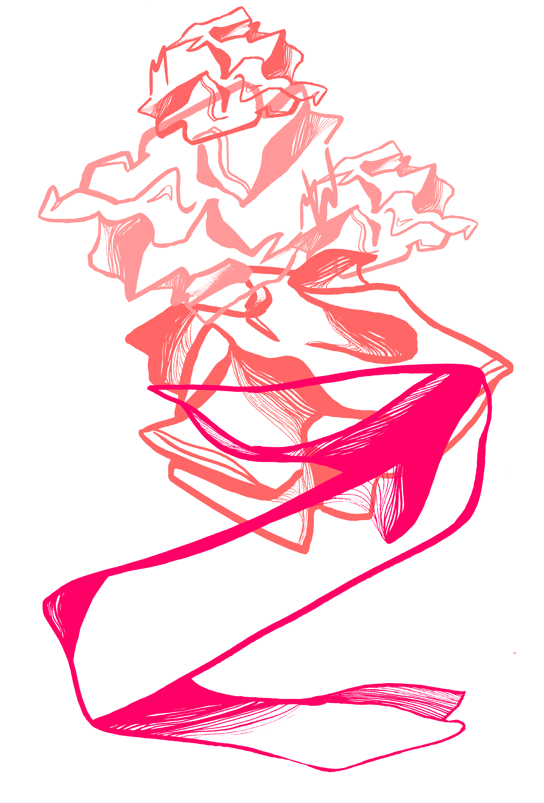

WORTH
1
How does public perception shape you? Rake
you through dirt and dust? Do you grow or wilt
with age? Do you ripen, then rot? Entering the
public sphere at a young age, opens you to
excess vulnerability.
CON-
STANT

a constant
need to
prove oneself.
At fourteen years old, Taylor signed her first record deal; from there
her career expanded and musical talent grew. In 2010, Swift was
the youngest woman ever to receive Album of the Year for her
sophomore work, Fearless. An embodiment of “innocence” and
“youth.” And from that innocence, an evaluation of worth develops.
She did everything
right. She put in the
work. She won the
Grammy. A constant
assessment persists.
Under a microscope.
Undeserving of fame
and success.
constant
space